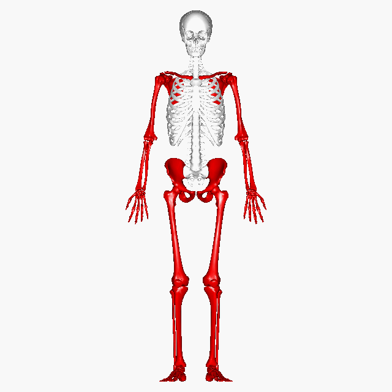

El sistema locomotor, llamado también sistema músculo-esquelético, está constituido por los huesos, que forman el esqueleto, las articulaciones, que relacionan los huesos entre sí, y los músculos que se insertan en los huesos y mueven las articulaciones.
Los huesos proporcionan la base mecánica para el movimiento, ya que son el lugar de inserción para los músculos y sirven como palancas para producir el movimiento.
Las articulaciones relacionan dos ó más huesos entre sí en su zona de contacto. Permiten el movimiento de esos huesos en relación unos con otros.
Los músculos producen el movimiento, tanto de unas partes del cuerpo con respecto a otras, como del cuerpo en su totalidad como sucede cuando trasladan el cuerpo de un lugar a otro, que es lo que se llama locomoción.
Posición anatómica: es una posición ideal del cuerpo, aceptada por consenso, para realizar las descripciones anatómicas, que se basa en la suposición de que la persona se encuentra: • en posición erecta • con la cabeza, los ojos y los dedos de los pies dirigidos hacia adelante • con los talones y los dedos de los pies juntos • y con las extremidades superiores colgando a ambos lados del cuerpo con las palmas de las manos hacia adelante. Siempre se tendrá en cuenta esta posición al describir a los pacientes (o cadáveres) que descansan sobre la espalda (posición en decúbito supino), los lados (posición en decúbito lateral izquierdo o derecho) o sobre el frente (posición en decúbito prono). Sea cual sea la posición real del paciente, siempre tendremos in mente la posición anatómica. Planos del cuerpo: muchas descripciones anatómicas se llevan a cabo empleando planos imaginarios que pasan a través del cuerpo situado en posición anatómica. Son: • Plano medio: es el plano vertical que pasa longitudinalmente a lo largo de la línea media del cuerpo en dirección ántero-posterior. Divide al cuerpo en dos mitades iguales: derecha e izquierda. 3 • Plano sagital: es cualquier plano vertical que pasa a través del cuerpo, paralelo al plano medio. El plano sagital que pasa a través del plano medio del cuerpo se llama plano sagital medio y se encuentra en el mismo plano que la sutura sagital del cráneo situada entre los huesos parietales del cráneo. A veces se oye hablar de plano parasagital, significa lateral al plano sagital medio. • Plano frontal: es cualquier plano vertical que pasa a través del cuerpo formando un ángulo recto con el plano medio. Divide al cuerpo en una porción anterior y una porción posterior. Se encuentra en el mismo plano que la sutura coronal del cráneo que une el hueso frontal con los huesos parietales. • Plano horizontal o transversal: cualquier plano que pasa a través del cuerpo formando un ángulo recto con los planos medio y frontal. El plano horizontal divide al cuerpo en una porción superior y otra inferior.